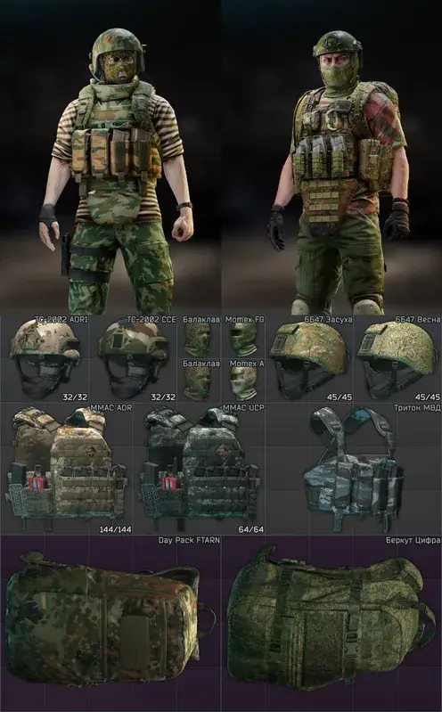
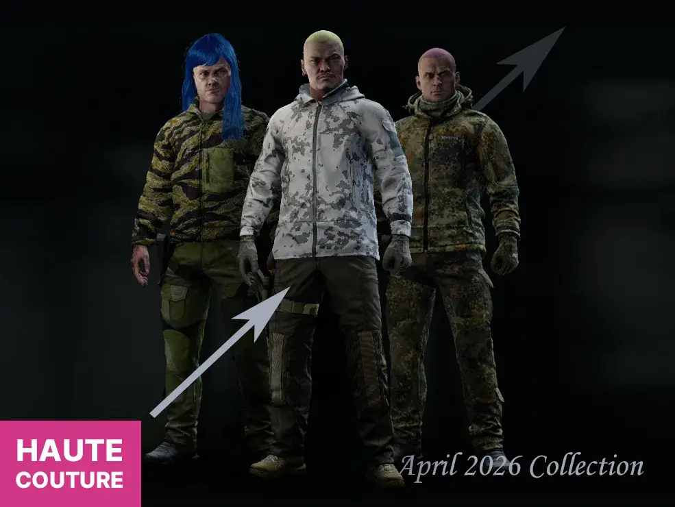
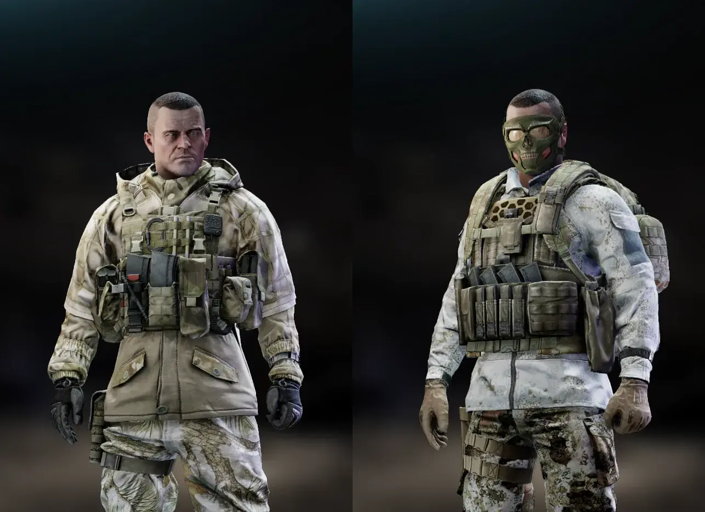
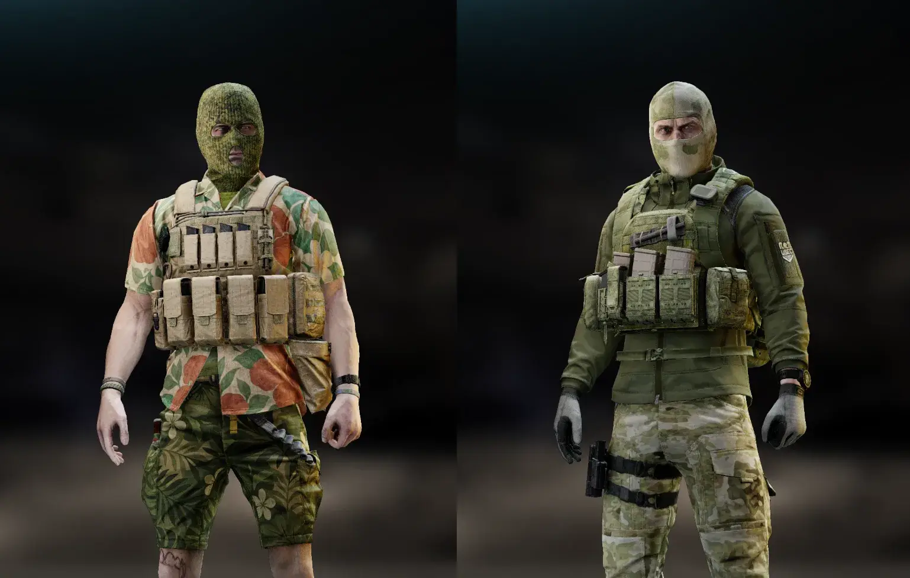
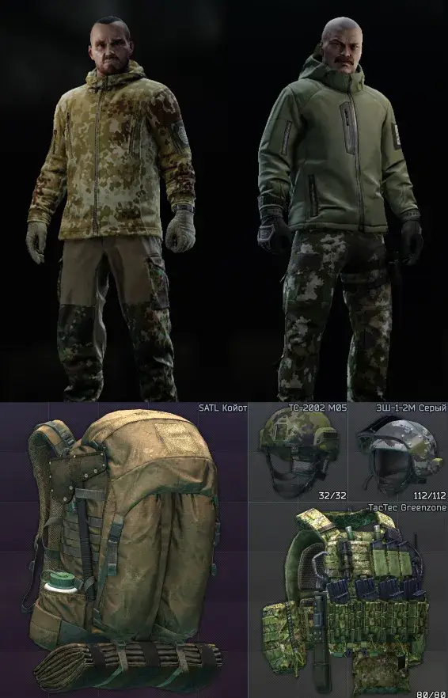

Couturier - gear and clothing pack
- Downloads
- 37,957
- Favourites
- 43
- Mod lists
- 59
- Gear: 180+ new variations of 50+ items total
- Clothes: 67 tops, 50 bottoms
—

(used Moxopixel’s WTT Menu Overhaul for the top of the preview)
You can get the gear from:
- Flea market (can be disabled)
- The “Couturier” trader, ~90% of the gear (mostly same levels and prices as vanilla items, can be disabled)
- Vanilla bots (If you use Algorithmic Level Progression you most likely need to enable “addCustomTraders” in config of this mod to see this gear on bots)
- In random loadouts in latest version of Croupier
—
SPT Realism support:
SPT Realism patch by Kojimbooo
—
Config:
“sellGearOnFlea” (true/false)
Whether these retextures are available on the flea market
“allGearAvailableOnFlea” (true/false)
Whether all items are available on flea market. If disabled, retextures of items that aren’t available on the market originally (eg Ops-Core FAST) won’t be available too
“traderEnabled” (true/false)
…
“botsUseGear” (true/false)
Again, works only for vanilla bots.
“unlockOthersFactionsClothing” (true/false)
Disable that if you don’t want to see the other’s faction clothes in Ragman’s offers.
—
Known issues:
If you have WTT Menu Overhaul mod, rapidly switching facecovers and helmets can cause crashes. Since some users can’t reproduce it, this likely points to a game + GPU driver issue, not to this mod or MoxoPixel’s one. —
Credits:
- JustNU for JustNUCore
- Chomp for mod examples
- Golani for SPT Asset Editor
Version
2.0.3

⚠️ If you are updating from a previous version, please delete SPT/user/cache folder! Otherwise the server won’t start! ⚠️
Changes:
- Some fixes
- A few items (Thor armor, SOE Micro, Rush 100)
- New clothing (8 bottoms, 9 tops)
The update was made by Kojimbo0_0
Version
2.0.2
🔗 Direct link
🔗 Mirror in case the direct link doesn’t work
⚠️ If you are updating from a previous version, please delete SPT/user/cache folder! Otherwise the server won’t start! ⚠️
Changes:
- Fixes in some textures
- Added 3 Thunderbolt and 3 CPC Goons chest rigs
Version
2.0.1
SPT >4.0.2: Direct download | Google Drive
SPT 3.11.4: Google Drive
⚠️ 3.11 Users: Please clear your cache by deleting /user/cache folder - otherwise the server probably won’t start!
Warning 2 (3.11): This is the last version to support SPT 3.11.4.
Warning 3 (4.0.x): The SPT 4 version will not work on 4.0.0 and 4.0.1. Please update to 4.0.2 or higher.

Changes:
- (SPT 4 only) Moved the mod to C#
- (SPT 4 only) Rebalanced some items, removed some
- Repacked and repointed most of retextured stuff bundles to use original gloss and normal maps (mod size + possibly minor RAM/GPU RAM usage decrease)
- Some new clothing
- Some new gear (Death Shadow, D3CRX, Blackrock, Skanda, RBAV, Tarzan, Umka, 6sh112, Hexgrid, Takedown, Paratus, Terminator, Gunslinger)
Credits:
- Kojimbooo for some retextures!
- GrooveypenguinX for making SPT client support customization_seller option again!
nuked from forge, try source code url
Version
1.3.1
Minor hotfixes for 1.3.0 content: Season/faction data for the new clothing + fix of the gray Banshee chestrig
Version
1.3.0
- Dozens of retexture fixes
- New clothing retextures (20 tops, 11 bottoms)
- New gear retextures (Oakley backpack, Banshee chestrig, MPPV, ANA M1, TV-110, Balaclava, Momex)
- Vanilla bots’ gear: bots now use retextures corresponding to their faction (BEARs use Soviet/Russian, USECs use Western, with some exceptions)
- Vanilla bots’ clothing: bots now use custom clothing, generally matching their faction and the current season (eg, PMC bots shouldn’t wear T-shirts in winter or snow camos in summer)

The update authored by turbodestroyer and Kojimbooo
nuked from forge, try source code url
Version
1.2.0
This update was co-created with Kojimbo, who volunteered and handled much of the retexturing in it.
Changes:
- New clothing retextures (6 tops, 13 bottoms)
- New gear retextures (SATL, Blackjack 50, ZSh-1-2, 2002, Lshz, TacTec Plate Carrier)
- Fixes in textures/locales
- Moved all clothing to Coutourier. If you disable the trader the clothing will be back in Ragman

nuked from forge, try source code url